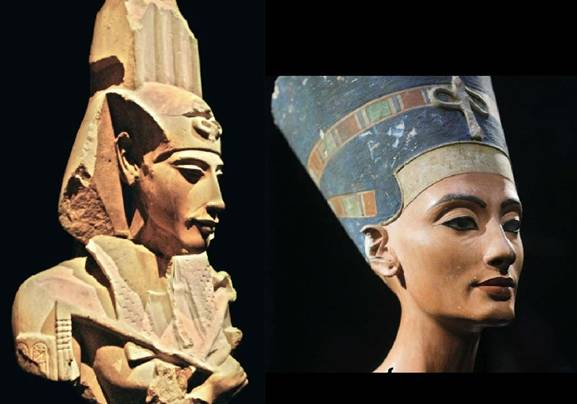
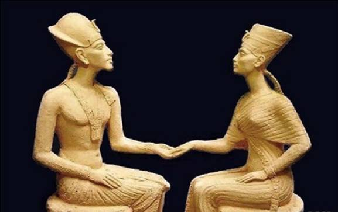

Страницы авторов "Тёмного леса"
Литературный Кисловодск и окрестности
Пишите нам! temnyjles@narod.ru
| Эхнатон | Древнеегипетский фараон-реформатор из XVIII династии ("Полезный для Атона"), известный до 5-го года своего правления как Аменхотеп IV ("Амон доволен"). Он правил 17 лет и скончался в 1335 году до н.э. |
| Нефертити | Высокородная дама нецарского происхождения, первая жена Эхнатона |
| Аменхотеп III | Египетский фараон, отец Эхнатона |
| Тия | Жена Аменхотепа III, мать Эхнатона |
| Кийа | Вторая жена Эхнатона, бывшая его наложница |
| Тадухепа | Еще одна наложница Эхнатона, мать Моисея |
| Моисей | Ветхозаветный пророк, основатель иудаизма. По некоторым источникам, сын Эхнатона |
| Маи | Верховный жрец храма Амона в Фивах |
| Келадон | Начальник стражи во дворце Фараона |
| Имхотеп | Жрец храма Ра, мудрец, посвященный в тайны бытия |
| Флиндерс Питри | Ученый-археолог, впервые в конце XIX века обнаруживший развалины древней столицы Ахетатона |
| Даниэль Лекруа | Профессор Сорбонны, современный египтолог и философ |
| Морис Горлье | Его ученик, аспирант Сорбонны |
Занавес поднимается. Слышны рыдания и крики. Видны огни факелов. Мечущиеся языки пламени и их отблески усиливают впечатление общего хаоса. По сцене в обе стороны пробегают мужчины и женщины, плачущие и заламывающие руки.
Тия, выходя из потока бегущих людей и останавливаясь посередине сцены:
О, Боги! Амон, Птах, Тот, Осирис, Исида, Хор и Ра! За что вы послали мне такую кару! Нет больше на свете моего мальчика, любимого сыночка Тутмоса! Да, он был слаб ногами и не очень силен в науках. Но наш друг, верховный жрец храма Амона Маи, обещал вылечить его к лунному месяцу Тот {1} и принял из нашей казны самые богатые дары, какие когда-либо вручались служителям храмов! Но, похоже, его молитвы не оказались достаточно сильны чтобы донести наши послания до Великого Амона. О, горе мне, горе!
Аменхотеп III, входя на сцену:
Не плачь, моя дорогая Тия! Не пристало нам роптать на Амона. Его щедрость к нам безгранична, иначе он не подарил бы нам второго сына, которого, мы, по великому его наущенью, назвали в его честь. Слава, слава и еще раз слава Великому Амону! Завтра же прикажу вдвое увеличить наши храмовые пожертвования в его честь. Да и юный наш сын Аменхотеп проявляет гораздо более высокие познания в астрологии, медицине и геометрии, чем его, увы, уже усопший брат. Распорядись, чтобы погребальные жрецы как следует набальзамировали его тело и не жалели по этому случаю благовоний.
Тия:
Ты как всегда прав, мой Повелитель. Но Аменхотеп еще очень юн, совсем как ребенок. Я вчера застала его за игрой в солдатики.
Аменхотеп III:
И, тем не менее, он стал моим наследником. А я ведь, Тия, тоже еще не стар и не собираюсь на покой. За время, что Боги мне отвели прожить на этом свете, Аменхотеп успеет подрасти и, я уверен, станет достойным продолжателем традиций нашего великого царства. Однако, как бы мал он ни был, согласно нашим законам завтра же он пройдет обряд Посвящения. Кстати, а как поживает наш друг Маи?
Тия:
С тех пор, как Тутмосу стало совсем плохо, он не появлялся во дворце. Говорят, что он завершает строительство загородного дома в районе великих водопадов Асуана. От падающей воды там даже в самый жаркий летний зной держится прохлада и уже многие знатные жители Фив построили там свои летние резиденции.
Аменхотеп III:
И все же, дорогая, не будем спешить с выводами. Жрецы живут вне времени и пространства и постоянно общаются с Богами, где бы они ни находились. Тем более что Маи оказал Египту много полезных услуг, в том числе по установлению дружественных отношений с царями Митании и Вавилона, в результате чего удалось прекратить многовековую войну с ними, истощавшую наше государство на протяжении столетий. Да будет славен наш покровитель Амон!
На заднем плане сцены высвечивается изображение Бога Амона. Аменхотеп III и Тия поднимают руки навстречу Амону, воздают ему молитвы и покидают сцену.
Полумрак. По стенам горят несколько факелов. На заднем плане жертвенный огонь, зажженный в честь создателя Солнца - Бога Ра. Около жертвенника седовласый мудрец, жрец храма. Входят два Аменхотепа - отец, Аменхотеп III и юноша, его сын, Аменхотеп IV, будущий Эхнатон.
Жрец храма Ра Имхотеп, обращаясь к Аменхотепу III:
Приветствую тебя в моей скромной обители! О, Повелитель Нижнего и Верхнего царств, Великий, могучий и прославленный вождь всех живущих в Египте народов, земное воплощение нашего божественного светила Амона! Я также рад видеть твоего юного спутника, в котором узнаю даровитого продолжателя твоего рода! Знаю о постигшем тебя горе и потере любимого старшего сына Тутмоса. Всем сердцем и всеми знаниями готов служить тебе, о, Справедливый из Справедливейших!
Аменхотеп III:
И я рад видеть тебя в добром здравии, Имхотеп! С тех пор, как я прошел твое Посвящение в тайное знание после смерти моего отца и присвоения мне титула фараона, прошло больше 30 лет, но ты мало изменился. Теперь настал черед моего сына Аменхотепа IV прикоснуться к сокровенной тайне бытия. Знаю, что данный ритуал требует разговора Учителя с учеником с глазу на глаз, поэтому оставляю вас вдвоем. Надеюсь, что, как и в прошлый раз, твое учение будет обращено во благо Египта, зажжет священный огонь процветания нашей династии в веках и воплотит в земную жизнь мудрые заветы нашего небесного покровителя Амона!
Жрец Имхотеп:
О, Великий правитель! Ты знаешь, что, к сожалению, я не властен над тем, что буду говорить. Я лишь оракул, озвучивающий мысли моего небесного хозяина - Бога Ра, да пребудет его воля во веки веков!
Аменхотеп III удаляется. Юноша подходит ближе к священному огню, около которого стоит жрец Имхотеп. В зале появляются служительницы храма в огненных развевающихся длинных одеждах, исполняющие зажигательный ритуальный танец, кружащиеся все быстрее и быстрее и вовлекающие в вихрь своего танца Жреца и юношу. В какой-то момент жрец оказывается на возвышении рядом с огнем, который освещает его сзади, создавая вокруг него ореол, подобный Солнцу. В этот момент танцовщицы покидают сцену.
Бог Ра в теле жреца Имхотепа:
Ну что же, все готово, мы можем начать Мистерию. Возможно, вначале ты сам хотел бы спросить меня о чем-то. Сейчас это время наступило. Смелее! Спрашивай!
Аменхотеп IV:
О да, Великий! Я изучил все известные нам науки с лучшими учителями, предоставленными мне моими родителями, но до сих пор не могу понять, почему у нас в Египте три бога Солнца - Ра, Амон и Атон, и какая между ними разница?
Бог Ра:
Я ждал этого вопроса. Ответ одновременно и очень прост, и очень сложен. Вспомни поговорку о "Стовратных Фивах". Напомню, город Фивы построен таким образом, что, в какие бы ворота ни вошел путник, все улицы направлены и приведут его от крепостных стен к дворцу фараона. Поэтому, для думающего человека не важно начало пути, и, чем бы он ни занимался - изучением жизни жука-скарабея, периодичностью появления звезд и планет на небе, историей войн или борьбой за власть - в конце своего пути он обязательно упрется в один-единственный вопрос, а именно вопрос управления этим миром и собой в этом мире - сам ли он управляет своими поступками, или кто-то принимает за него решения, и в какой мере то и другое ему подвластно - "Тварь ли он дрожащая, или право имеет"?
Аменхотеп IV:
А как же другие страсти человека - голод, любовь, интриги, тщеславие и жажда власти, зависть, желание наживы и денег, тяга к праздности и развлечениям, боязнь болезней и смерти - разве не они движут людьми, принося им одновременно и радость, и разочарование? И, кроме того, прости, но на основании твоего ответа я так и не смог понять разницы между солнечными Богами.
Бог Ра:
Мой юный друг, все, что ты перечислил, на самом деле лишь производные первой страсти, о которой я тебе говорил. Если ты умеешь управлять своей судьбой, т.е. умеешь менять внешние обстоятельства в соответствии со своими внутренними жизненными целями, то ты получаешь все - и хороший кров над головой, и обилие вкусной пищи, и любовь женщин, много денег и крепкое здоровье. А умение управлять внешними обстоятельствами дано лишь избранным и известно в народе под названием Магии. Но простые люди вкладывают в это слово упрощенный смысл, чаще всего имея в виду так называемую Черную Магию, вокруг которой полно шарлатанов. Я же сейчас открою перед тобой истинное Тайное Знание. В том числе ты узнаешь и о солнечных Богах, как части нашего мира. Эти познания потребуются тебе в дальнейшей твоей жизни.
Аменхотеп IV:
О, мудрейший, я весь внимание, скорее поведай мне все, что ты сочтешь нужным.
Бог Ра:
Не будем спешить и обсудим все по порядку. Тем более что ради нашей встречи я остановил Время и сколько бы мы ни говорили, для всех остальных и твоего отца длительность нашей беседы покажется лишь мгновением. И, к сожалению, я расскажу тебе лишь ту часть знаний, которую ты способен усвоить. Так устроен мир, каждый из нас видит лишь ту его сторону, которую готов осознать, превращая видимые ему образы в знакомые ему символы и не допуская в свое сознание то, что для него непонятно.
Аменхотеп IV:
Я буду стараться, как могу, следовать за твоими мыслями.
Бог Ра:
Сокровенное Божество, составляющее основу Бытия, каждые 16 миллиардов лет просыпается, чтобы творить Миры, это первая фаза. Затем посылает Божественный Луч, падающий в первичную Материю, или Хаос и рождающий Мужскую и Женскую Силы. Это вторая фаза. Силы эти в третьей фазе распадаются на 7 Посланников Божиих, или 7 Божественных Строителей, начинающих строить Мир. Затем Сокровенное Божество засыпает, а созданные им Миры разрушаются и исчезают, чтобы на следующий Божественный день через следующие 16 миллиардов лет снова возродиться, и так продолжается до бесконечности. Я, бог Ра - один из этих семи Строителей. Моей задачей было создать Солнце, и я его сотворил, но я не Солнце. Люди в силу своего невежества часто ассоциируют меня с Солнцем и поклоняются мне как Солнцу.
Аменхотеп IV:
Теперь я знаю, кто ты, но, пожалуйста, не останавливайся и расскажи, чтобы развеять мое невежество, об Амоне и Атоне.
Бог Ра:
Прежде чем что-либо построить вы, люди, всегда создаете план. Неважно, изображен ли он на папирусе, или существует только в голове человека, но план всегда предшествует воплощению в жизнь. Также действуем и мы, Боги. Идея первична, ее воплощение вторично. Поэтому каждый предмет во вселенной, неважно, живой или неживой, будь то река, камень, животное, человек, или, наконец, Земля и Солнце вначале создаются как Идеи, хранящиеся в невидимом Эфире, а затем воплощаются в материальные образы. Амон - это идея Солнца, его невидимая душа, а Атон - воплощение этой идеи, которое вы видите в виде светящегося диска на небосводе. Таким образом, Амон - Бог четвертого уровня, Атон - пятого.
Аменхотеп IV:
Так значит, прав мой отец и все мои предки XVIII династии Египта, что мы поклоняемся Божеству более высокого уровня - Амону, а не Атону?
Бог Ра:
И да, и нет. Все дело в том, что Божественный Эфир содержит записи обо всех событиях, как уже свершившихся, так и о тех, что произойдут в будущем. И в его скрижалях записано, что через две тысячи лет от сегодняшнего дня, в так называемом 7-м веке новой эры, Египту грозит страшная опасность. Ныне достаточно дикое и малочисленное племя козопасов Аравийского полуострова, которых во внешней политике вы даже не берете в расчет, увеличится в своем числе, обретет новую религию и двинется на завоевание мира, круша и уничтожая на своем пути все царства и государства с их многовековой историей и культурой, в том числе сметая при своем движении и нас, древних Богов. Мы не можем этого допустить и знаем средство, как их остановить. К сожалению, твой брат Тутмос был слаб духовно и физически, поэтому Боги выбрали для этой цели тебя.
Аменхотеп IV:
Но вы ведь не убили его?
Бог Ра:
Жизнь смертного в руках Божиих. Скажем так, что мы не препятствовали его естественному уходу в мир теней. Однако, ближе к сути нашей беседы. Мы знаем, что плененные семиты с Аравийского полуострова сейчас находятся в Египте в качестве рабов. Нужно создать из них особый новый народ, внушив им идею их избранности. А воплощением этой идеи должна служить мысль о существовании у них Единого Бога. Затем следует поселить их на Ближнем Востоке, где сходятся на узком перешейке все пути, ведущие с Аравийского полуострова в Европу, Азию и Африку. В силу своей избранности они будут служить некоей затычкой в узком горлышке на пути арабских орд, рвущихся на завоевание мира, и остановят их. Египет будет спасен! Но им нужно показать пример единобожия, и эту задачу мы возлагаем на тебя. Тебе придется пойти против вековых традиций и объявить в Египте единобожие, призвав всех поклоняться единому Богу - Атону!
Аменхотеп IV:
Но я не хочу поступать так и предавать веру моих предков!
Бог Ра:
Увы, мой мальчик, такова твоя судьба, а также ответ на вопрос об управлении судьбой, с которого мы и начали беседу...
Свет за спиной Бога Ра меркнет, на сцене вместо него вновь жрец Имхотеп. В помещение вбегают служительницы Храма, подхватывают ослабевшего от долгой беседы и переживаний юношу и укладывают его на ложе у края сцены. Входит его отец - Аменхотеп III.
Аменхотеп III, обращаясь к жрецу Имхотепу:
Мне показалось, или это было на самом деле, что Посвящение прошло достаточно быстро. Надеюсь, что все было сделано подобающим образом. А как чувствует себя мой мальчик?
Жрец Имхотеп:
Не волнуйся, о Великий из Великих! Единственное, что могу сказать, что при Посвящении время течет не так, как обычно. Что же касается сути, то, к сожалению, я не вправе разглашать тайну Посвящения. Но уверяю, что все прошло, как и должно было произойти. Правда, твой сын очень устал и ему сейчас нужен покой. И не забудь, что по египетским традициям, как бы юн ни был наследник, ему необходимо как можно скорее обрести супругу.
Аменхотеп III:
Не беспокойся, о выборе невесты уже позаботилась Тия. Будущая супруга нашего сына происходит из знатного египетского рода и очень хороша собой, а зовут ее Нефертити.
Комната богато украшена лепниной, мрамором и золотом. К Тие приходит Верховный жрец храма Амона Маи.
Тия:
Как смеешь ты показываться мне на глаза после того, как не уберег нашего любимого сыночка Тутмоса! И почему не сдержал данные тобой перед Всевышним Амоном обещания вылечить его?
Маи:
Я понимаю, что горе гложет твое сердце, о, Величайшая из женщин Египта! Весь наш народ от мала до велика скорбит вместе с тобой об этой утрате! Но вспомни, мы делали все, что возможно. "Подобное лечится подобным" и мы каждый день готовили отвар из сердца и печени самого быстрого и самого выносливого существа на Земле ягуара, чтобы быстрее поднять его на ноги и укрепить рассудок. Но, увы, воля Богов была иной, хотя, я уверен, что вернувшись при следующем своем воплощении из царства теней на Землю, Тутмос завершит начатый им жизненный круг, вновь родившись наследником Великого царства, и займет принадлежащее ему по праву место Правителя! Слава Амону!
Тия:
Но почему ты не показывался во дворце в те дни, когда ему стало совсем плохо?
Маи:
Ты не поверишь, о, Умнейшая из умнейших! Но все последние дни я следил за этим выскочкой, жрецом Бога Ра, Имхотепом. Он явно что-то замышляет против вас. Я знаю, что ваш дражайший супруг приводил к нему на Посвящение твоего второго сына, Аменхотепа IV, объявленного наследником престола.
Тия:
Но это наша тысячелетняя традиция, именно жрецы Ра проводят этот обряд. Что здесь плохого?
Маи:
Традиции - вещь серьезная, но их создают люди, а, следовательно, люди их и меняют и отменяют. Откуда мы знаем, что внушается во время Мистерий, и не кому бы то ни было, а будущему правителю Египта. Мне кажется, что от этого замшелого обряда давно пора отказаться. Вы, фараоны, являетесь земным воплощением Бога Амона, и можете для отмены Мистерий просто издать царский Указ, но, если вам очень захотелось бы дать чуть больше воли вашему погрязшему в грехах народу, то вы могли бы провести опрос, но, конечно, только среди наиболее уважаемой части граждан Египта, например, среди тех, кто владеет не менее чем 100 арурам {2} плодородной Нильской земли.
Тия:
Мы подумаем над твоим советом, но не будем спешить, тем более что обряд уже совершен. А сейчас оставь меня, мне нужно отдать все необходимые распоряжения, касающиеся свадьбы моего сына.
Маи:
Должен ли я продолжить мои наблюдения за Имхотепом?
Тия:
Да, и незамедлительно докладывай мне обо всем подозрительном, что заметишь.
Посередине сцены расположен длинный стол, заставленный богатыми яствами и дорогими напитками, за которым сидят многочисленные гости, уже слегка захмелевшие, но не перестающие чествовать новобрачных Аменхотепа IV и Нефертити. Они находятся во главе стола. Слева и справа от них родители - Аменхотеп III и Тия.
Верховный жрец Амона Маи, поднимая бокал и обращаясь к новобрачным:
Этот день - один из величайших в истории Египта. XVIII династия обрела свое продолжение в лице славного Аменхотепа IV и его юной избранницы Нефертити. Давайте все вместе произнесем это великое имя "Аменхотеп", что означает "Амон доволен"! И я, как верховный жрец Амона подтверждаю благоволение нашего Бога к этому союзу. Да принесет он счастье и процветание ныне царствующему Аменхотепу III, его семье и всем жителям Египта!
Гости встают, кричат поздравления, чокаются и пьют вино. В это время к Аменхотепу III подходит начальник дворцовой стражи Келадон и отводит его в сторону. Гости, не обращая внимания на отсутствие отца жениха, продолжают веселиться и чествовать новобрачных.
Начальник стражи Келадон, обращаясь к Аменхотепу III:
Прости, о, Великий владыка! Но дело не терпит отлагательства. Помнишь, что согласно твоему приказу, чтобы пробудить в юном Аменхотепе IV мужские силы, я доставил несколько месяцев назад в его спальню юную наложницу по имени Тадухепа, которая должна была обучить твоего сына искусству любви между мужчиной и женщиной?
Аменхотеп III:
Да, и что же? Надеюсь, что теперь мой мальчик не ударит лицом в грязь перед прекрасной Нефертити, когда придет черед лечь им на брачное ложе.
Начальник стражи:
Но, к несчастью, после той ночи с твоим сыном Тадухепа понесла, и сегодня ночью родила мальчика. Прикажете, чтобы не портить сегодняшнего торжества, умертвить мать и младенца?
Аменхотеп III:
Что за околесицу ты несешь, болван! Младенец царских кровей, да еще мужского пола, в большой политике лишним никогда не бывает. Возможно, со временем их и придется умертвить, но ради высшего блага нашего отечества, а не по чьей-то сегодняшней прихоти. Сейчас же мы поступим хитрее. Отнесешь новорожденного в корзинке в заросли тростника около Нила и оставишь его около воды, а сам прикажешь своей страже пойти в этом направлении. Пусть они найдут младенца и принесут обратно во дворец. Тадухепу назначим воспитательницей "подкидыша".
Начальник стражи:
Но, о, Мудрейший, в Египте часто бедняки подкидывают своих детей, не имея возможности их прокормить, но никому и в голову не приходит растить их в царском дворце. Как же мы объясним этот наш поступок?
Аменхотеп III:
Тебе ведь известно, что семиты, живущие в Египте в качестве рабов, уже давно недовольны своим положением и готовят бунт. Конечно, мы могли бы с легкостью истребить их всех, но тогда мы бы лишились дешевой рабочей силы. Поступим мудрее. Объявим, что найденный младенец родом из семитов и случайно остался без родителей. Мы же проявим к нему высочайшее милосердие, взяв к себе на воспитание. Слух об этом распространится по всему Египту и заставит замолчать злые языки о якобы тяжелом положении наших подданных.
Начальник стражи:
Твоя прозорливость, о, Владыка, сравнима лишь с твоей мудростью. Но Тадухепе нужно будет дать ребенку имя. Может ли она выбрать его по своему усмотрению?
Аменхотеп III:
Ты отлично сражаешься на мечах, и тебе нет равных в точности стрельбы из лука. За эти качества я и назначил тебя начальником стражи, но в иных делах ты проявляешь удивительное скудоумие. Ведь мы объявим, что ребенок родом из семитов, следовательно, и имя его должно быть семитским. А так как найдут и спасут его около воды, то пусть его имя так и звучит: Моше - "Спасенный из воды".
Начальник стражи:
Я сделаю все, как ты повелел мне, о, мой Владыка!
Аменхотеп III:
И помни, никому ни слова, ни полслова, иначе твоя жизнь будет стоить не больше той корзинки, в которую ты положишь младенца.
Начальник стражи:
Не сомневайся, о, Справедливейший! Я буду нем, как рыба.
Аменхотеп III возвращается к столу. За время разговора с начальником стражи многие гости съели уже изрядное количество еды, и выпили еще большее количество вина. Гости начинают расходиться. Аменхотеп IV и Нефертити направляются в опочивальню. Слуги посыпают дорогу перед ними лепестками роз.
Тия, обращаясь к супругу:
О чем ты так долго беседовал с этим болваном, начальником стражи?
Аменхотеп III:
Ничего важного, дорогая. Он, как всегда, просил повышения жалования для тех из стражников, кто работает по ночам.
Тия:
Надеюсь, ты ему отказал?
Аменхотеп III:
Конечно, дорогая. Ведь те, кто сторожит по ночам, днем могут возделывать свои поля, и тем самым повышать свое благосостояние, не обременяя нашу казну.
Нефертити у колыбели очередной родившейся дочери. Входит Аменхотеп IV, будущий Эхнатон.
Аменхотеп IV:
Как наша дочурка Макетатон?
Нефертити:
Она только что уснула, славная наша малышка. Она такая милая, даже когда недовольна чем-то, жалуется и начинает плакать. Дорогой, а ты не сердишься на меня, за то, что я рожаю уже третью дочь, и у нас так и не появился ни один мальчик?
Аменхотеп IV:
Что за вздор! Мы с тобой так молоды, и так любим друг друга, что ты родишь мне еще сотню сыновей, я уверен.
Нефертити:
Но в городе полно завистников. Мне кажется, что многие не рады нашей любви. Я слышала, что среди жителей Фив ползут слухи, что появление у нас одних дочерей является плохим предзнаменованием. А причиной гнева Богов на нас является то, что мы всем нашим детям даем имена не в их честь, а в честь только одного Бога Атона.
Аменхотеп IV:
К сожалению, люди всегда рады посудачить о том, в чем на самом деле плохо разбираются. Не обращай внимания на эти пересуды. Не забывай, что я - наследник престола и стоит мне только попросить отца, и он прикажет казнить любого, кто распространяет эти глупые сплетни.
Нефертити:
Нет-нет, дорогой! Мы не должны быть жестоки ради наших уже родившихся и будущих детей. Пожалуйста, никого не надо казнить. Пока наша дочка крепко спит, лучше расскажи, чем ты сегодня занимался?
Аменхотеп IV:
Следуя указаниям отца, я готовлюсь в будущем занять трон Египта, а для этого я должен быть сведущ в управлении государством и в делах внешней политики. Поэтому сегодня вместе с отцом мы принимали наших наместников из египетских военных форпостов на Ближнем Востоке и зарубежных послов Митанни, Вавилона, Ассирии и Хатти.
Нефертити:
Какой же ты умный у меня! Самый умный из всех фараонов XVIII династии и всех предыдущих династий! Я горжусь тобой!
Аменхотеп IV:
А я горжусь тем, что Боги послали мне такую замечательную, красивую и умную жену!
С этими словами Аменхотеп подходит ближе и обнимает Нефертити. Они берутся за руки и с восторгом смотрят друг другу в глаза. Целуются и произносят вместе:
- Какое счастье быть рядом с тобой! Я люблю тебя! Только смерть может разлучить нас!
Слава Богам, что мы повстречали друг друга в этой жизни! Мы будем вместе навсегда!
- О, мой любимый!
- О, моя любимая!
В тронном зале собралось все высшее общество Египта и послы дружественных стран Митании и Вавилона, одетые по-восточному в чалмы.
Жрец Маи:
Улусун бааси, гоксель чисмин дуниеви енкарнасионы.
Вдовствующая царица Тия:Уважаемый жрец, не мог бы ты выражаться яснее.
Жрец Маи:
Дорогие гости, извините меня ради всех Богов, наших и ваших, задумался...
Отец нации, земное воплощение небесного светила Амона, любимый всеми нами фараон XVIII династии Аменхотеп III покинул этот мир, чтобы засиять новой звездой на небесном своде нашей благодарности этому Величайшему и Наимудрейшему сыну Верхнего и Нижнего царств Египта, да святится имя его и да упокоится душа его!
Нет, я не могу продолжать, слезы душат меня, слезы гордости и одновременно слезы сожаления о том, как много он дал каждому из здесь присутствующих и как мало получил от нас благодарности в ответ. Слава Богам, что здесь в этом зале мы видим его любимого сына Аменхотепа IV. Ему мы вверяем судьбу Египетского царства и ему, я уверен, сможем возвратить в полной мере часть нашей любви, благодарности и восхищения, которые не смогли воздать его отцу, сиятельному Аменхотепу III при его жизни!
Я верю, что наш покровитель Амон сейчас где-то рядом, и вместе с нами скорбит о преждевременной утрате и одновременно ликует по поводу восхождения на трон нового Египетского правителя! Таков непреложный закон круговорота жизни во Вселенной! Воздадим же молитвы нашему покровителю Амону! Слава Всевышнему! Слава! Слава!
Жрец храма Ра, наклоняясь к Аменхотепу IV так, чтобы его слышал только он:
Маи всегда говорит долго и вроде красиво, но непонятно, о чем.
Но не будем терять времени зря. Ты помнишь Посвящение и те слова, что произнес Бог Ра. Теперь, когда ты стал фараоном, ты обязан последовать за своей судьбой. Не бойся провалов и разочарований. Помни, что каждый раз, когда тебе кажется, что ты стоишь на краю бездны, на самом деле судьба готовит тебя к прыжку через нее в будущее, сулящее тебе новые победы!
Я буду время от времени приходить к тебе и помогать, чем могу. Будут периоды в жизни, когда тебя начнут проклинать, а потом почти забудут, но впереди тебя ждет вечная слава и благодарность потомков!
На сцене Аменхотеп IV и его жена Нефертити.
Аменхотеп IV:
Слава Богам! Наконец-то мы остались одни. Сегодня был очень тяжелый день. Прощание с отцом, принятие титула фараона. Кажется, что все это было не более чем сон. Но нет, все свершилось на самом деле. Отныне я - повелитель Египта, величайшей империи мира!
Нефертити:
Милый, я так рада за тебя! Ты самый славный, самый умный и самый великий из всех фараонов, которых знала земля. Я горжусь тобой!
Аменхотеп IV:
Но сейчас настало время, когда я должен кое в чем признаться тебе. Когда я проходил Посвящение, Богами была возложена на меня особая задача по спасению Египта в будущем, и ради этой цели мне было приказано, когда я стану фараоном, отказаться от всех наших Богов и утвердить поклонение единственному Богу - Атону. И теперь я должен выполнить их волю.
Нефертити:
Дорогой, эти же самые Боги выбрали и меня тебе в жены. Я люблю тебя и буду любить всегда, и буду тебе верна, что бы вокруг ни происходило, и что бы ты ни делал.
Аменхотеп IV:
Я знал, что услышу от тебя именно эти слова, я тоже люблю тебя, Нефертити.
Нефертити:
Атон, так Атон, я буду во всем следовать за тобой, мой ненаглядный! Тем более что все прочие Боги за 8 лет нашего супружества подарили нам 6 дочерей, и ни одного наследника престола. Быть может, Атон будет более благосклонен к нам.
Аменхотеп IV:
Завтра же отдам приказ о строительстве в Фивах нового, самого большого храма, посвященного Атону.
К Царице входит Верховный жрец Маи.
Маи:
О, горе нам! Я во время коронации все время наблюдал за этим хитрецом, жрецом Ра. А он все время вертелся вокруг твоего сына и что-то нашептывал ему. Я сразу же подумал, что здесь что-то не так. Слава Амону, у меня повсюду есть уши, и мне доложили, что завтра в нашем городе начнется по приказу фараона строительство нового храма в честь Бога Атона.
Тия:
Что здесь такого дурного? Легче указать, кому из Богов в Фивах не построен храм, чем сосчитать, в честь кого они уже воздвигнуты. Еще один храм только увеличит могущество нашего государства.
Маи:
Все это так, о, Мудрейшая. Но Аменхотеп IV приказал построить его на 50 локтей выше {3} самого высокого из храмов Фив. А всем в Египте известно, что во веки веков самым высоким храмом в Фивах по праву был и оставался храм Амона. Такое строительство подорвет веру в Амона как верховного божества, внесет в головы граждан ненужную сумятицу и закончится как всегда междоусобицей. Нужно немедленно помешать этой сумасбродной идее, наверняка заложенной в голову твоего сына этим негодником, жрецом Ра!
Тия:
Увы, мой друг. С тех пор как ушел в царство теней мой супруг, а мой сын занял трон фараона, он все меньше и меньше советуется со мной в государственных делах. Одно знаю, что огромное влияние на него оказывает его жена Нефертити.
Маи:
О, мудрейшая! Ты как всегда попала в самую точку. Именно по этому поводу я и пришел поговорить с тобой. Нефертити вредна для нашего государства и нужно избавиться от нее.
Тия:
Уж не сошел ли ты с ума, и не замышляешь ли убийство?
Маи:
Помилуй меня Амон, конечно, нет. Есть план получше. Твоему сыну нужна новая жена, верная нашим вековым традициям.
Тия:
Но я знаю, что Аменхотеп и Нефертити безумно любят друг друга и разрушить этот союз невозможно.
Маи:
Невозможно смертным диктовать свою волю Богам, а в земных вопросах всегда есть средства для решения проблем. В основном таких способов насчитывается три - людей можно купить, запугать или обмануть. Купить и запугать можно многих, но не фараона, а вот обмануть можно всякого. Есть у меня на примете девушка неземной красоты. И, прости меня за самоуправство, но уже сегодня я приказал приставить ее ко двору в качестве служанки фараона. Желаешь взглянуть? Я распорядился, чтобы она подождала за дверью конца нашего разговора.
Маи хлопает в ладоши и в комнату входит девушка поразительной красоты в довольно откровенном наряде.
Тия:
Насколько я знаю, мой сын со дня своей свадьбы был всегда верен жене и ни разу не изменял Нефертити. Что еще ты задумал?
Маи, доставая из своей одежды небольшой флакон зеленого стекла:
Ее зовут Кийа. В качестве служанки она имеет доступ во внутренние покои Аменхотепа. Все очень просто, я дам ей приворотное зелье и она подсыпет его твоему сыну, и тогда он не устоит перед ее чарами. Верно, Кийа?
Кийа:
Я рада выполнить любое ваше поручение во благо Египта и Бога Амона!
Тия:
А она не так уж и глупа.
Аменхотеп IV отдыхает на ложе и звонит в колокольчик, чтобы позвать слуг. В помещение входит Кийа в откровенном до предела наряде.
Аменхотеп IV:
Ты кто?
Кийа:
Я твоя новая служанка, о, Повелитель!
Аменхотеп IV:
Очень жарко. Принеси мне прохладительный напиток.
Кийа:
Слушаю и повинуюсь.
Кийа выходит и тут же возвращается с кувшином. Видно, как она достает приворотное зелье и подмешивает его в напиток. Аменхотеп выпивает почти весь кувшин.
Кийа:
Желаешь еще что-нибудь, мой Повелитель?
Аменхотеп IV:
Нет, а, впрочем, постой!
Видно, что приворотное зелье начинает свое действие. Аменхотеп привстает и вздрагивает, машет перед лицом руками, как будто отгоняя какое-то видение.
Аменхотеп IV:
Не уходи, как тебя зовут?
Кийа, подходя почти вплотную к Аменхотепу:
Кийа, мне 14 лет.
Аменхотеп IV (задумчиво и в то же время страстно):
Четырнадцать... Какая же ты красивая!
Аменхотеп берет Кийю за руку. В следующее мгновение она оказывается в его объятиях. В этот момент в комнату входит Нефертити.
Нефертити:
Предатель! Обманщик! А я, глупая, поверила его клятвам в любви! Изменить мне с первой встречной! Нет, я не переживу такого позора! Прощай, я ухожу навсегда!
Свет гаснет. В темноте слышны крики "О, горе нам! Ушла из жизни великая царица Тия! Нет больше мудрейшей из мудрейших! О, горе!". Через некоторое время снова виден Аменхотеп IV, который одиноко стоит на сцене.
Аменхотеп IV:
Умер отец и вот не стало и моей матери! Ночь опустилась на Египет! Я мог бы найти утешение у Нефертити. Увы, я и ее потерял навсегда. Она не отвечает на мои послания и отказывается видеть меня. Не могу понять, что стало со мной, когда я набросился как голодный лев, на новую служанку? Но теперь уже невозможно что-либо изменить и поправить. В толпе из тысяч людей я одинок, как никогда! В Фивах у меня не осталось ни родителей, ни жены, ни друзей, ни соратников. Многие ненавидят меня из-за строительства храма Атона и провозглашения новой религии. Этот город стал мне чужим.
Входит жрец Бога Ра:
О, владыка, ты у края одной из бездн, о которых я предупреждал тебя. Развилка дорог - это не конец предыдущего пути, а начало нового. Тебе придется изменить свою жизнь, и, возможно, начать ее заново!
Аменхотеп IV:
Заново! Вот слово, которого я так долго ждал! Я построю новую столицу, где все будет иным, и жизнь моя начнется заново! Я назову новый город в честь Бога Атона - Ахетатон. А сам я войду в эту новую жизнь с новым именем. Отныне я не Аменхотеп, а "Полезный для Атона", и имя мое - Эхнатон!
Занавес опускается. Конец 1-го действия.

Эхнатон разговаривает с Кийей, ставшей его новой женой.
Кийа:
Мой дорогой, что с тобой? Последнее время ты выглядишь таким грустным. Хочешь, я приготовлю тебе на обед твои любимые лепешки с начинкой из плодов граната?
Эхнатон:
Да, ты права, мне действительно не по себе. Я построил, как хотел, новую столицу и назвал ее в честь Бога Атона. Я обязал всех жителей Египта забыть старых Богов и почитать лишь одного единственного - Атона, земным воплощением которого я являюсь. Но я чувствую, что в воздухе витает глухое недовольство моими реформами и знаю, что даже в моей новой столице многие из жителей тайно поклоняются старым Богам. Мне действительно как-то не по себе. Пойду прогуляюсь и глотну свежего воздуха.
Эхнатон выходит во внутренний сад дворца и встречает там женщину в сопровождении молодого мужчины, которые бросаются перед ним на колени и умоляют выслушать их.
Эхнатон:
Кто вы такие и что вам нужно в моем дворце?
Женщина, поднимаясь с колен:
Наверное, ты не узнал меня, о, Владыка! Ведь прошло столько лет со времени нашей встречи. Я - Тадухепа. Помнишь, я обучала тебя искусству любви, когда ты был совсем еще юным мальчиком.
Эхнатон:
Да, теперь я тебя припоминаю. А рядом с тобой кто?
Тадухепа:
Ты мне не поверишь, о, Великий, но это твой сын - Моше.
Эхнатон:
Но если это мой сын, то почему все эти годы он скрывался от меня?
Тадухепа:
По приказу твоего отца факт его рождения держался в строжайшей тайне, чтобы не расстраивать твою жену Нефертити. И он был объявлен подкидышем.
Эхнатон:
Слава Атону! Теперь я обрел сына. Ведь у меня до сих пор не было наследника. От Нефертити у меня родилось 6 дочерей и от моей новой жены Кийи еще две, и ни одного мальчика. Теперь у меня есть наследник моего престола!
Тадухепа:
Должна тебя огорчить, о, Могущественный! Увы, но по приказу твоего отца было объявлено, что твой сын является семитом. И все эти годы он воспитывался как семит. За его воспитанием следил жрец храма Ра, готовя его к выполнению задачи по спасению семитского народа из многовекового египетского плена. Сейчас этот час настал, все готово для исхода из Египта.
Эхнатон:
Ах, да, ну, конечно, мое Посвящение! Там об этом говорилось. О, Боги, порой вы бываете так жестоки! Вот только что я обрел сына и сразу же его потерял! Но воля Ра для меня священна. Я знаю, что вы пришли ко мне не просто повидать меня, хотя я и бесконечно рад нашей встрече.
Моисей:
Отец! Согласно указаниям жреца Ра последние несколько лет я неоднократно посещал все 40 колен Израилевых, и внушал им идею единобожия, беря в пример тебя и Бога Атона. Но чтобы быть избранным народом, нам нужен был свой бог, другой, нежели Атон, и он нам явился. Имя его - Иегова. Народ же наш также обрел свое собственное имя. Отныне мы - Евреи. Несколько дней назад Иегова вновь пришел к нам и поведал, что настало нам время покинуть Египет в поисках Земли Обетованной.
Эхнатон:
Что я могу сделать для тебя, мой мальчик?
Моисей:
Мы не сможем выйти из Египта просто так. Армия Египта не имеет равных себе в мире. Первый же патруль остановит нас на нашем пути и тогда нас ждет неминуемая кара и смерть. Прикажи своим стражникам выпустить нас из страны, чтобы мы могли выполнить нашу задачу по будущему спасению Египта.
Эхнатон:
Хорошо, я сделаю все, что вы просите. А сейчас давайте обнимемся на прощание. Ведь мы больше никогда не увидимся, но всегда будем помнить друг о друге!
Эхнатон обнимает и крепко прижимает к себе Тадухепу и Моисея. Они уходят со сцены и еще долго прощально машут ему рукой. Эхнатон стоит неподвижно и задумчиво смотрит им вслед.
Эхнатон вызывает к себе начальника стражи Келадона.
Начальник стражи:
О, Великий! Ты звал меня?
Эхнатон:
Да, Келадон, есть одно важное дело. Я узнал из верных источников, что завтра Семиты, которые теперь называют себя Евреями, намереваются тайно покинуть пределы нашей страны.
Начальник стражи:
Прикажешь задержать их и наказать по всей строгости?
Эхнатон, передавая ему папирус:
Наоборот. Вот план их движения. Приказываю сегодня же вечером с этого пути убрать все наши посты и позволить им беспрепятственно пройти до границы с Синаем.
Начальник стражи:
Значит, ты хочешь, чтобы я умертвил их в пустыне, без свидетелей?
Эхнатон:
Я вижу, что ты не сильно поумнел с тех пор, как служил моему отцу. Повторяю, они должны выйти невредимыми со всеми обозами, скарбом, женщинами, детьми и козами.
Начальник стражи:
Но тебе известно, мой Повелитель, что незадолго до сегодняшнего дня они взяли у наших ростовщиков значительные суммы серебра в долг, общим весом не менее 3 кантар {4}, и, скорее всего, намереваются увезти с собой все эти деньги, не возвращая долги обратно? Прикажешь хотя бы это серебро отобрать у них в пути и вернуть законным владельцам?
Эхнатон:
Нет, и еще раз нет. Повелеваю выпустить их из Египта со всеми деньгами. Ростовщикам вернуть потерянные суммы из царской казны.
Начальник стражи:
О, Великий! Твоя щедрость граничит лишь с твоей мудростью! Не гневайся, но ради чего мы все это делаем?
Эхнатон:
Боюсь, что тебе будет трудно это понять. Если кратко ответить на твой вопрос - то ради вечности.
К Кийе приходит Верховный жрец Маи
Кийа:
Приветствую тебя, о Божественный!
Маи:
Как дела, что нового во дворце, как поживает твой благоверный?
Кийа:
Вчера он о чем-то очень долго беседовал с начальником стражи, а сегодня по столице прошел слух, что Евреи каким-то чудом сумели миновать все войсковые заслоны на своем пути и покинули Египет.
Маи:
Тебе известно, что стало причиной их ухода и куда они направляются?
Кийа:
Нет, мой Повелитель. Сколько я не расспрашивала Эхнатона, он ничего мне не говорит, хотя я убеждена, что он в курсе событий.
Маи:
Уверен, что все это проделки жреца храма Ра. Настала пора прекратить подрыв устоев нашего государства. Регулярно ли ты подмешиваешь приворотное зелье в напитки Эхнатона?
Кийа:
Я подсыпаю зелье по чуть-чуть каждый день, как ты мне повелел, о, мой Господин!
Маи, доставая из-под одежды флакон красного стекла:
Ну что же. Пора попробовать иное средство. Сегодня добавишь в напиток вот это снадобье.
Кийа:
Но что это такое? Приворотное зелье действует достаточно хорошо. Эхнатон поверил, что любит меня.
Маи:
Тебя это не касается. Делай, что приказывают!
Эхнатон и Кийа вдвоем за вечерней трапезой. Кийа незаметно добавляет в бокал Эхнатона зелье из красного флакона, оставленное ей жрецом Маи. Эхнатон выпивает вино.
Эхнатон:
Что-то мне нехорошо. Наверное, сегодня перегрелся на солнце. Пойду прилягу.
Он встает из-за стола, но вдруг пошатывается и хватается рукой за грудь. Видно, что ему тяжело дышать.
Эхнатон:
Что со мной? Я задыхаюсь, скорее врача!
Кийа, выходя из комнаты:
Сейчас, дорогой, уже бегу.
Эхнатон:
Туман рассеялся, голова моя ясна, но силы покидают меня. Теперь мне стало совершенно ясно, что Кийа все эти годы обманывала меня и была лишь моим наваждением. Слава Богам, что она ушла! Я не любил никого в этой жизни, кроме Нефертити, но в силу роковых обстоятельств я потерял ее. Я умираю, пусть Боги пошлют мне чудо, и в конце моей жизни Нефертити придет проститься со мной и простит меня!
Эхнатон слабеет на глазах. В голове его проносятся картины всей его жизни, и ему видится, что он снова рядом и разговаривает с Нефертити. На сцене появляется Нефертити в виде астрального образа.
Нефертити:
Я здесь, мой любимый! Я снова с тобой! Теперь тебе нечего бояться, отныне мы будем вместе навсегда.
Эхнатон:
Я умираю. Как хорошо, что ты снова здесь! Дай мне твою руку, так мне будет легче. Знай, что тебя и меня обманули и несправедливо разлучили наши враги. Но все эти годы я постоянно думал о тебе и скучал по тебе. Я люблю только тебя, моя единственная!
Нефертити:
Я тоже, мой любимый! Я верю тебе. Я навеки твоя!
Эхнатон умирает. Его душа отделяется от тела. Души Эхнатона и Нефертити, держась за руки, в лучах солнца уносятся ввысь навстречу своему будущему. В комнату входят Кийа и Маи. Тело Эхнатона лежит бездыханным.
Маи, обращаясь к Кийи:
Ты славно выполнила то, что я задумал. Не сомневайся, тебя ждет достойное вознаграждение!
Кийа:
Я всегда рада служить тебе, о, мой Господин!
Маи:
Ну вот, все и кончено. Сегодня же издам приказ от твоего имени, чтобы все жители Ахетатона срочно собирали свои пожитки и возвращались в Фивы. А этот город будет стерт с лица земли. Оставшийся после его разрушения камень мы используем для строительства повсюду в Египте новых храмов в честь Бога Амона. Все изваяния Атона и любые упоминания о нем должны быть уничтожены, чтобы нигде не оставалось и капли памяти о нем и о его сумасбродном фараоне-почитателе.
Кийа:
А как мы поступим с телом?
Маи:
Предадим земле, но без особых почестей. И на надгробной плите не будем делать никаких надписей, чтобы те немногие последователи Атона и Эхнатона, если они все-таки останутся, не сотворили себе кумира!
Землекопы усердно орудуют лопатами и натыкаются на безымянную могилу.
Землекопы:
Сэр, мы нашли чью-то могилу!
Флиндерс Питри, начальник археологической экспедиции:
Есть что-то существенное? Надгробная плита, украшения в могиле?
Землекопы:
Нет, сэр, ничего особенного. Плита есть, но без надписей.
Флиндерс Питри:
И, тем не менее, аккуратно достаньте все останки. И, как всегда, с величайшей тщательностью и осторожностью сложите все, что найдете, в эксгумационный ящик.
Землекопы:
Какой номер присвоить могиле и ящику?
Флиндерс Питри:
Конечно, следующий по порядку - KV55.
Профессор-египтолог Лекруа беседует со своим аспирантом Горлье. Включено радио, из которого льется тихая фоновая музыка.
Профессор Даниэль Лекруа:
Итак, мой юный друг, как продвигается твоя диссертация? Насколько я помню, при нашей последней встрече мы окончательно согласовали ее название: "Зигмунд Фрейд как первооткрыватель монотеистической концепции в древности на примере взаимосвязи религиозных воззрений Эхнатона и Моисея".
Аспирант Морис Горлье:
Совершенно верно, профессор. Но написание диссертации, к сожалению, движется крайне медленно и причиной этого является противоречивость первоисточников, с которыми я работаю, а порой и просто отсутствие достоверных фактов, заменяемых тут и там вымыслами последующих поколений исследователей.
Профессор Лекруа, с улыбкой глядя на слегка смущенного юношу:
Как никто, понимаю тебя. Когда я был также молод как ты, и готовился к защите своей диссертации, я тоже был убежден, что в основе исторической науки должны и действительно лежат только конкретные факты. Увы, как же я ошибался, что, впрочем, не помешало мне успешно получить степень доктора исторических наук и вскоре даже стать преподавателем в Сорбонне, в качестве коего я здравствую и поныне.
Горлье:
Но, профессор, если не факты, то что? Нас еще на первых курсах Университета учили, что любая наука должна опираться только на факты, иначе она превращается в лженауку.
Профессор Лекруа:
Да, но только если мы это говорим, допустим, о математике, где теорема Пифагора уже давно стала аксиомой. В исторической науке все не так.
Ты скажешь, что есть письменные источники. Да, но они появились лишь относительно недавно, 3-4 тысячи лет назад, да и то только в нескольких странах. Кроме того, где гарантия, что сохранилось достаточно полное описание событий. Возможно, что как раз наиболее ценные фрагменты и утеряны безвозвратно. И, чтобы трактовать древние записи, нужно родиться древним человеком, а современному человеку нужны некие "ключи" для прочтения и понимания древних текстов. А где их взять? Отсюда и различные объяснения одних и тех же текстов.
Ты скажешь, но есть же археология. Уж она-то оперирует конкретными находками и должна давать полное знание о происшедших событиях. Увы, она дает еще меньше конкретных сведений, чем письменные источники. И причиной этого является полная неизвестность того, что мы извлекаем из-под земли. Вот мы нашли некий черепок, ну и что? Было ли причиной разрушения амфоры землетрясение, война, или амфору разбили об чью-то голову из-за ревности, или она просто упала на землю и сама разбилась? Мы никогда этого не узнаем.
Или, вот, например, неизвестная могила KV55 в Ахетатоне. Историки до настоящего времени не пришли к единому мнению, кто же там погребен, хотя большинство все же склоняется к мнению, что нами найдена могила Эхнатона, но это только одна из возможных гипотез.
Горлье:
Но как же тогда создается и развивается историческая наука?
Профессор Лекруа:
Только за счет концепций, мой юный друг. Историки только тем и занимаются, что создают или по собственному наитию, или по заказу со стороны различные исторические концепции, втискивая в них, как в Прокрустово ложе те немногочисленные письменные источники и артефакты, которые укладываются в эти концепции и, без зазрения совести, отметают и забывают о других исторических данных, которые не отвечают их теоретическим построениям.
Горлье:
Но тогда получается, что историки постоянно говорят нам неправду.
Профессор Лекруа:
Вопросы правды и лжи я все-таки оставил бы на откуп моралистам. Историческая же наука выполняет великую задачу консолидации или разобщения общества. В зависимости от того, кто в чем и когда нуждается. Хорошо, если это делается от чистого сердца. Хуже, когда в историческую науку начинают вмешиваться политики. Хотя политики и так постоянно в угоду своих интересов используют данные истории.
Горлье:
Вы имеете в виду оправдание прошедших войн или обоснование будущих?
Профессор Лекруа:
И это тоже, мой юный друг.
Горлье:
Теперь мне многое стало понятнее. Спасибо за такие глубокие и подробные разъяснения, профессор. Но что же мне делать с моей диссертацией?
Профессор Лекруа:
Пиши и заканчивай ее, мой друг. Аспирантура, наверное, единственный период в жизни, когда ученый абсолютно свободен от чужеродных влияний и может творить, как ему подсказывает сердце. Создашь новую великую концепцию - станешь знаменитым ученым. Хватит тебя лишь на мелкую идею - будешь топтаться в очереди таких же мелкотравчатых историков, как и ты сам. Главное, не бойся творить и дерзать, и тогда перед тобой откроется невиданный по красоте и гармонии мир науки, который ты сам для себя и построишь! Смелее вперед, будущий доктор исторических наук!
Некоторое время Лекруа и Горлье сидят молча. Затем один из них увеличивает громкость радиоприемника. Музыка заканчивается и слышен голос диктора:
- Уважаемые радиослушатели, прослушайте новости. Продолжается тысячелетнее противостояние еврейского народа и арабского мира на Ближнем Востоке. По последним полученным нами данным, в районе Голландских высот возобновились ожесточенные столкновения между регулярными войсками Израиля и бойцами Организации Освобождения Палестины. Обе враждующие стороны понесли значительные потери в живой силе и технике, есть убитые и раненые.
Занавес опускается.
Заканчивается и наша история о неземной взаимной любви и трагической судьбе египетского фараона Эхнатона и его верной супруги Нефертити.

{1} К Новому году
{2} Около 30 га
{3} Около 25 м
{4} Более 400 кг
Страницы друзей "Темного леса"
Последнее изменение страницы 8 May 2021
{kind=link}
{kind=link}
{kind=link}